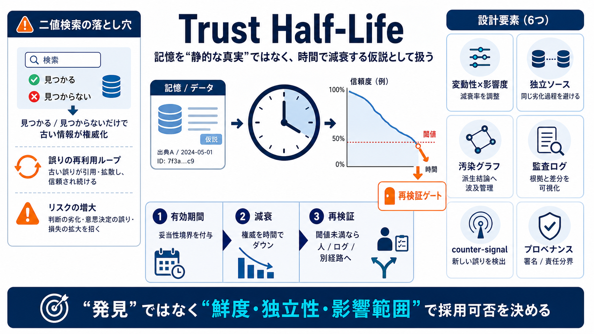

典型
古い記憶が“発見”扱いで採用される

記憶を「静的な真実」として扱わず、時間とともに“使える前提としての信頼”が下がる仮説として管理する設計指針。
retrieval を「見つかる／見つからない」だけで判断すると、古い情報が同じ権威を持ち続け、過信が権限として誤増幅する。
Trust Half-Life は半減期という比喩で、重要なのは“時間で信頼（権威）を減らし、必要なら再検証へ切替える”こと。
有効期間（妥当性境界）を明示し、意味記憶の権威を時間で減衰させ、閾値を下回れば再検証へ強制切替する。
劣化の本体は経過時間ではなく、参照対象（referent）がどれだけ変動するか＝ボラティリティと、誤りの損害＝影響度。
再検証先（ログや別経路のデータ）が同じ劣化過程だと、自己確認（self-licking ice cream cone）になり意味が薄い。
個々のエントリだけを弱めても、派生結論へ影響が伝播しなければ誤りが残り続ける。必要なのは汚染伝播グラフでの波及管理。
閾値ゲートを入れても、再検証が何を根拠に・どれだけ変えたか追えなければ、閾値調整が“経験的に最適化不能”になる。
誤りは「古さ」だけでなく「新しさ＋文脈欠如」でも起きる。比較文脈なしの指標は誤最適化を招く。
再検証が成功するかは“別の場所”ではなく“別の劣化過程にある根拠”かどうかで決まる。
Trust Half-Life を中心に、(a) 変動性と影響度、(b) 非循環的な検証、(c) 汚染伝播、(d) 監査可能ゲート、(e) 対抗指標、(f) プロベナンス/アテステーションまで含めて設計する。
Trust Half-Life は「いつの情報か」を権威として固定せず、信頼度を可変メタデータとして減衰させ、必要時に再検証へ切替える考え方。
ボラティリティ推定・再検証トリガー・汚染伝播の範囲は定量化が難しく、監査ログや汚染グラフはノイズとスケーリング課題を生む。
半減期関数だけでなく、(a) 検証の独立性、(b) 伝播（汚染）管理、(c) 監査可能性、(d) 権限とプロベナンス をセットで設計しないと別の自己強化ループに入りやすい。
No references found